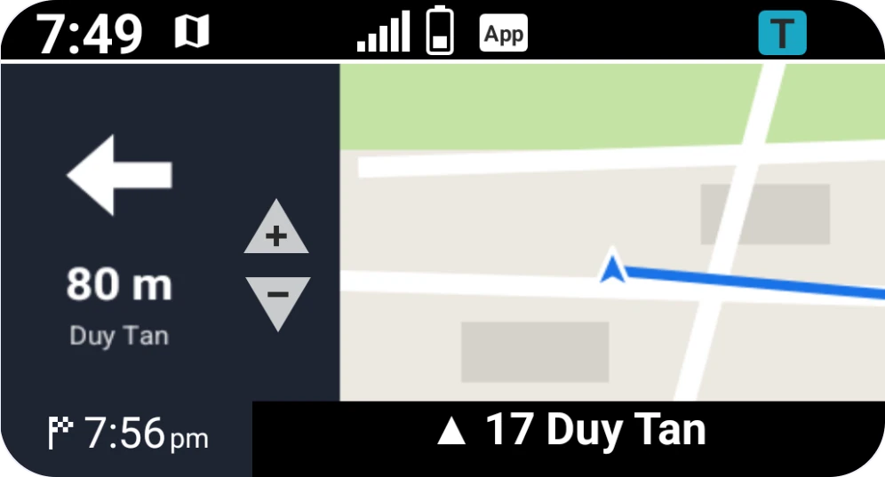

call
Calls on the dash
Who is calling shows on the dash, answer or hang up from the handlebar
Search VietMap and compare motorbike routes coloured by live traffic. Then ride turn by turn on the phone and the dash.
Turn arrow, distance and street, with bike stats beside it. Each stat has its own switch.
Every screen has a ? with illustrated tips, in English and Tiếng Việt.
Allow Nearby devices and Location, pick your bike, ride.
Everything a ride needs, on the screen your eyes are already on.
tap to connect. Auto connect does it for you when the app opens
radius for gas stations you can pick from the dash menu
of offline map around you, for riding without signal
bike stats next to the turn: air and engine temperature, battery, fuel economy
Bluetooth links at once: the dash and the bike's control unit
extra apps needed. No Y-Connect.

Who is calling shows on the dash, answer or hang up from the handlebar
Messages, emails, calls and the song playing show on the dash. Play, pause or skip from the handlebar
Pick one in the dash menu to start a route. Stop route ends it
+ and − on the dash zoom the map. Riding faster zooms out by itself
Sent to the dash from where you are
Save 30 × 30 km around you for riding without signal. Downloads once over Wi-Fi or data
The map moves to the dash, so the phone doesn't have to keep its screen on
The app finds a new route by itself when you go off route
The odometer comes straight from the bike's control unit. Oil, belt, air filter and spark plug count down on their own.
Two Bluetooth connections, each with its own job.
Download it from GitHub and open it on your Android phone.
Nearby devices finds the dash and control unit. Location shows you on the map and navigates.
On the bike, choose to connect a phone, then pair it in Bluetooth.
The chip shows each step, ending on Showing map.
Free for Android. Works with the TFT dash on Yamaha NMAX and XMAX.